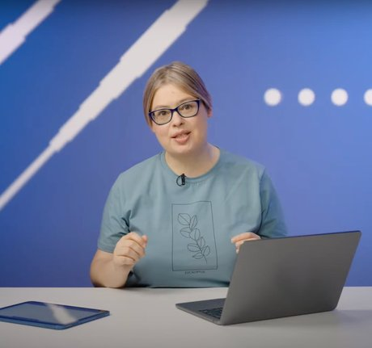

Математик, аналитик и преподаватель. Пятнадцать лет разбираюсь, где в цифрах правда, а где шум.
Преподаю с 2002 года — от олимпиадной математики до Школы анализа данных, ставила A/B-эксперименты в рекламе Яндекса, создала образовательную платформу «Пеликан». Сейчас собираю свои курсы: бесплатный «Сигнал или шум» и «A/B без мифов».

A/B-тесты, метрики и платформы экспериментов: что на самом деле сдвинуло цифры, а что шум.
Малый мехмат МГУ, Вторая школа, летние математические лагеря, РЭШ, ШАД, Jacobs University в Бремене, проекты студентов МФТИ.
Платформа олимпиадной математики для младших школьников: запустила, в 2016 году продала Яндексу, развиваю дальше. pelican.study
Пять лекций: статистика и критерии, ошибки I и II рода, бакеты, бутстрап, линеаризация, CUPED, стратификация, подглядывание и байесовский подход. Больше 10 000 участников, записи в открытом доступе.
Некооперативные и кооперативные игры, теория контрактов, дизайн механизмов, теория аукционов. Больше 1000 студентов.
Курс для студентов Computer Science на английском. Сейчас университет называется Constructor University, Бремен.
Малый мехмат МГУ, Вторая школа, летние лагеря по олимпиадной математике. Потом — семинары по теории игр и отраслевым рынкам в РЭШ (2009–2011).
Журнал «Код» — о пути от зала к сцене: «это не рокет-сайенс, а хорошо выполненная аналитическая работа».
Как избежать распространённых заблуждений в статистическом анализе — с симуляциями, которые можно запустить самому.
K. Bauman, A. Kornetova, V. Topinskii, D. Khakimova. Automatic Documentation and Mathematical Linguistics, 47, 52–58.
D. Arkhangelsky, S. Izmalkov, D. Khakimova, S. Lyashenko.
Интерактивный курс: случайность, распределения, ловушки в данных и первые A/B-тесты. Всё можно двигать, запускать и проверять своим кодом прямо в браузере.
Как ставить честные эксперименты в продукте: метрики-отношения, бакеты, CUPED, подглядывание, множественные проверки — и как отвечать на это на собеседовании.
Сначала научись отличать шум, потом ставь честные эксперименты.